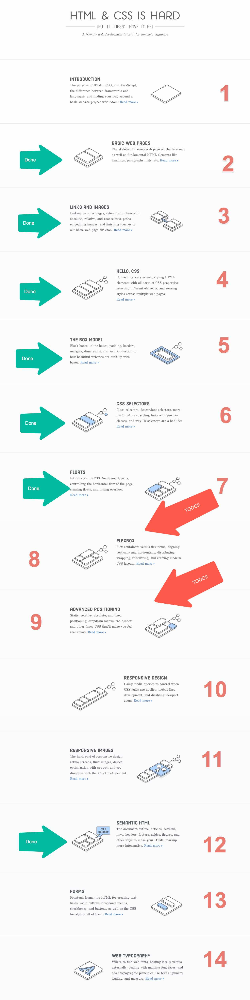

Les 4: Flexbox en Advanced Positioning
2. Student demo's
(niet weer Refai, Ugur, Sander G. of Wout of Ryan)
- footer met een ©... + vervangen <div> door <main> (ook CSS)
- h1 selector veranderen naar combi-selector zodat deze alleen &;t;h1> in <header> selecteert
- classes
links, rechts en clear
- menu-items naast elkaar ... met een beetje afstand ertussen + kleur van hyperlink pas bij achtergrondkleur header

Interneting is hard? 7 down - 6 to go!